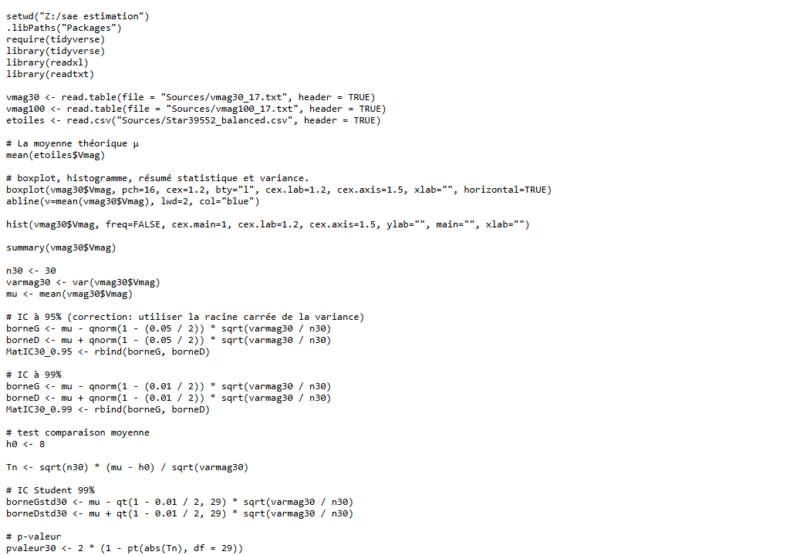
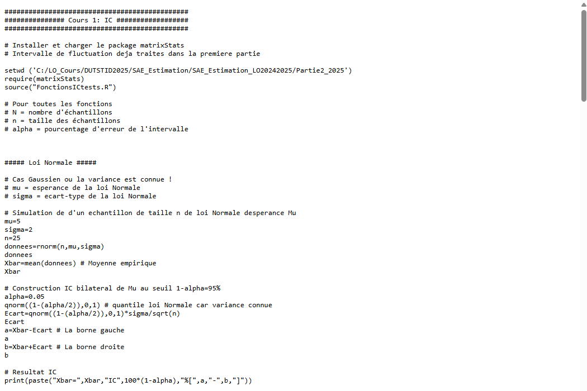

| Nom de la SAE | Estimation statistique et intervalles de confiance | |||
| Sujet spécifique | Estimation de la magnitude stellaire (Vmag) à partir d'échantillons de tailles différentes (n=30 et n=100) : construction d'intervalles de confiance à 95% et 99%, et tests de comparaison de moyennes. |
| Objectifs |
Construire des intervalles de confiance (IC) à 95% et 99% pour la moyenne. Comparer les IC selon la taille de l'échantillon (n=30 vs n=100). Réaliser des tests de comparaison de moyennes (z-test, test de Student). Interpréter les résultats et discuter l'impact de la taille de l'échantillon sur la précision. |
| Livrables | Script R commenté, rapport d'analyse |
| Compétence | Analyser |
| Apprentissages critiques sollicités | AC22.01 : Sélectionner les méthodes statistiques adaptées à la problématique |
| AC22.02 : Mettre en œuvre les méthodes statistiques | |
| AC22.03 : Analyser et interpréter les résultats produits | |
| Composantes essentielles à respecter | Choisir la bonne loi (loi normale / Student) selon la taille de l'échantillon et la connaissance de σ. |
| Calculer correctement les bornes des IC (qnorm, qt selon le cas). | |
| Interpréter les résultats : plus l'échantillon est grand, plus l'IC est précis (plus étroit). |
| Compétence | Traiter |
| Apprentissages critiques sollicités | AC21.01 : Comprendre l'organisation des données de l'entreprise |
| Composantes essentielles à respecter | Comprendre la structure des fichiers de données (vmag30, vmag100, Star39552_balanced). |
| Distinguer population (étoiles), échantillons (vmag30, vmag100) et moyenne théorique µ. |
| Savoirs / connaissances | Savoir-faire | Savoir-être |
|---|---|---|
|
Loi des grands nombres et théorème central limite. Intervalles de confiance (loi normale : qnorm, loi de Student : qt). Tests d'hypothèses : H0, p-value, région de rejet. Statistique de test Tn (z-test sur la moyenne). Différence entre IC à 95% et 99% (impact du risque alpha). |
Lire et analyser des données astronomiques en R (Vmag). Calculer la moyenne, variance empirique et IC avec R. Implémenter la formule de l'IC : µ ± z_{α/2} × √(s²/n). Réaliser un test de comparaison de moyenne (H0: µ=8) et calculer Tn. Visualiser les distributions avec boxplot et histogramme. |
Rigueur mathématique : bien distinguer paramètre / estimateur. Précision dans les calculs (ne pas confondre σ et s). Méthode : suivre les étapes du test (H0/H1, statistique, région critique, conclusion). Curiosité pour le domaine d'application (astronomie). |
Ce que je trouve bien réalisé, pourquoi ?
La comparaison des IC pour n=30 et n=100 est bien illustrée : on observe clairement que l'IC à 95% est plus étroit avec n=100, ce qui confirme empiriquement le théorème central limite. Le code R est bien commenté et les visualisations (boxplot, histogramme) aident à comprendre la distribution de la Vmag.
Ce que je n'ai pas bien compris ; ce qui serait à améliorer pour une prochaine fois : pourquoi ? comment ?
La distinction entre test unilatéral et bilatéral, et le choix du bon quantile (qnorm vs qt) selon le contexte, n'est pas toujours automatique. Pour une prochaine fois : créer un tableau récapitulatif des cas (n grand/petit, σ connue/inconnue) pour choisir la bonne approche ; s'entraîner sur des exemples variés (pas uniquement astronomie).

